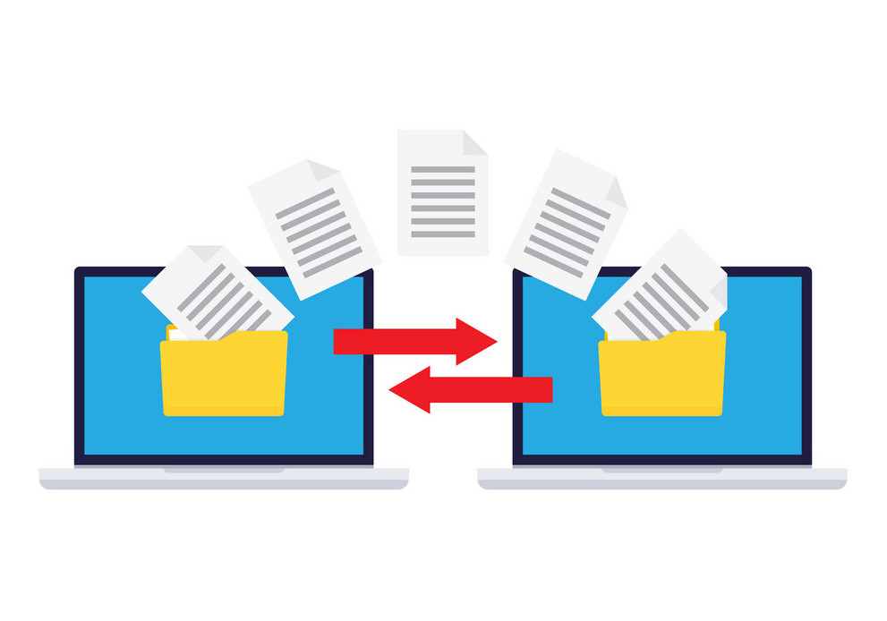

Our objective was to make a website to display our work in class and asssessment work for the next 2 years of IST. The website must be written from scratch using html. The website is to be be submitted as a github link and should funtion properly as a website. Meanin that it is simple to navigate and it should also pe visually apealing to the viewer. It will serve as a e-portfolio. The website is graded by the style of the website, the grammar and the contents. Additionally you will also need to supply documentation regarding the proscess of designing and making the website. It requires you to submit things like your planning, your understanding of the contraints and a breakdown of the final completed product.
The World wide web is a way of accessing information on the internet. It is not a form of hardware but instead like a software. It is run by many protocols and the one that is used most often is HTTP which stands for Hypertext Transfer Protocol this is a protocol to transfer data throughout the internet and is usually a transfer between a server and a client. Most webpages we find on the web are made by a language called HTML. The web is all about transferring this HTML so we can see it. Bassiclly the web is a form of accessing the internet.
The Internet is very different from the world wide web. The world wide web is a form of accessing the Internet, while the internet is the actual network of computers and servers that all of the information is stored on. Another way of putting it would be that the worldwide web is the software and the internet is the hardware. World wide web is just made up of protocols to acsess the information. Internet is alot of computer networks atached together using a bigger network, meaning that the internet is just one huge network of computers. All the websites and data is stored in data centres around the world and can be accessed with the HTTP protocol.
Intranet is a network that is used by people in a organization. It is maily used for collaberative work and shraing of information within a organization, it is ussually only used by the people withing the company or organization. It is created as a private network using the World Wide Web software. There are progams that allow for the creation of the intranet to be much esier and free. Some of these tools include Microstoft Sharepoint and Igloo. These make the creation of intranets free and easy. A intranet is different from the internet, it is private unlike the internet which everybody can access. The intranet ussually requirs a sign in or a pass to access the reasources avalible.
A Internet protocol is a way of sending information across the internet. It is like a software that exchanges information from one computer to another using other computers connected to the internet to aid it in sending the information to the recieving computer. There are many types of protocols such as IP or HTTP. IP is a protocol that transfers packets from one computer to another in a very unreliable way. IP packets can be lost along the way and is sent in a random order. Another Protocol is HTTP. HTTP stands for Hypertext Transfer Protocol. HTTP is a protocol that transfers hypertext, most of the web is made up of hypertext and HTTP allows you to see and access the websites and images stored on large servers or data centers. HTTP is what most websites use for information exchange.  FTP is a client, server transfer protocol. It allows people to download files from the internet and FTP can ransfer most types of files. FTP is differnt from HTTP and IP because FTP transfer most file types. While HTTP and IP only transfers Hypertext and Packets. IP is also much more unreliable compared to FTP and HTTP as there is no gurentee that the packet is going to make it to the other side. Packets also would arrive in a random order, different from the order they initiated in.